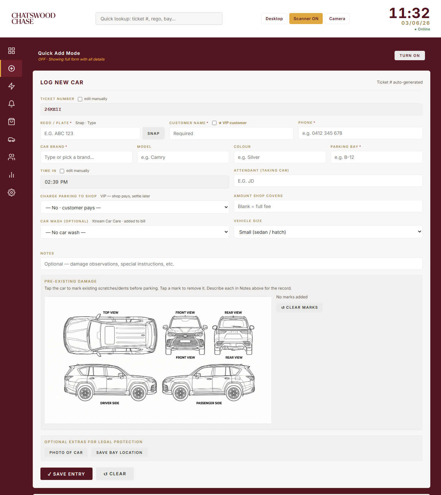
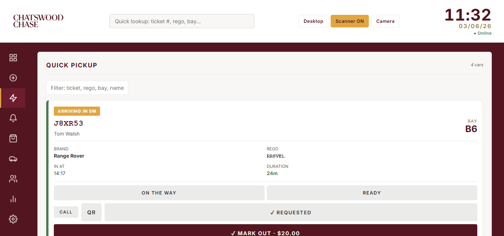
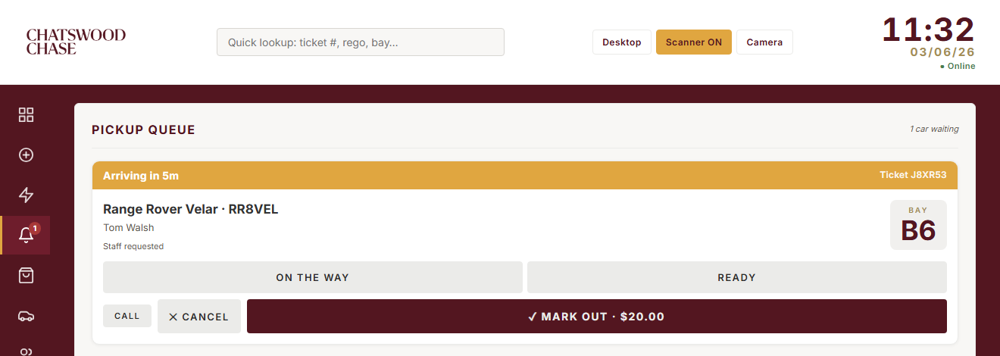
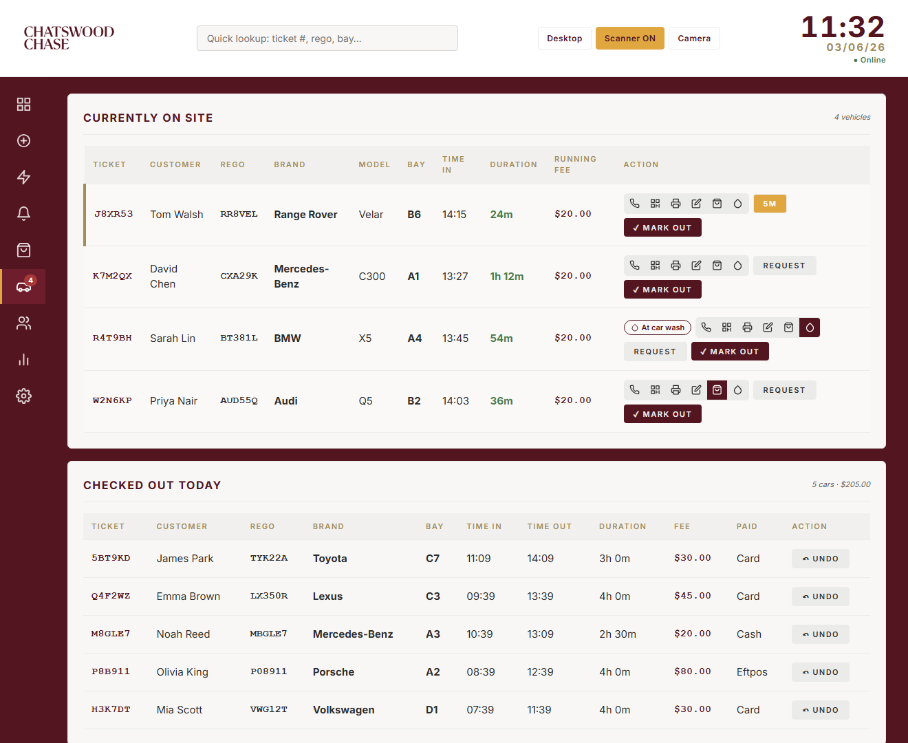
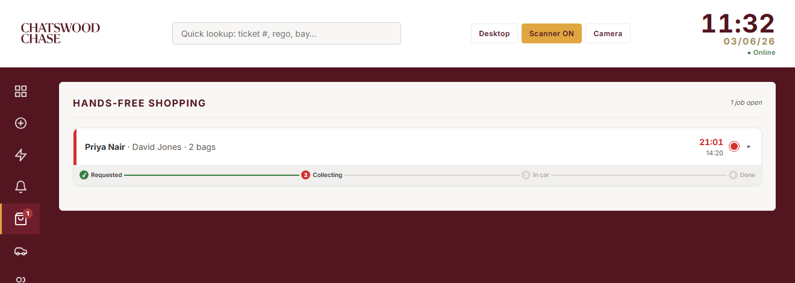
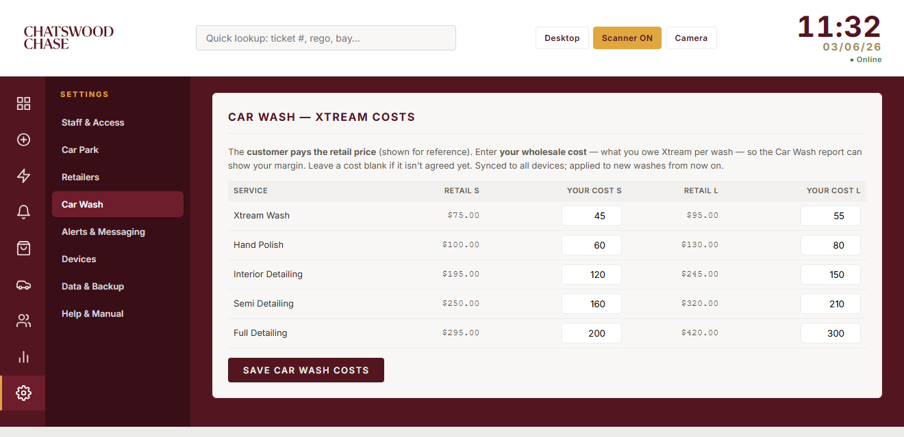
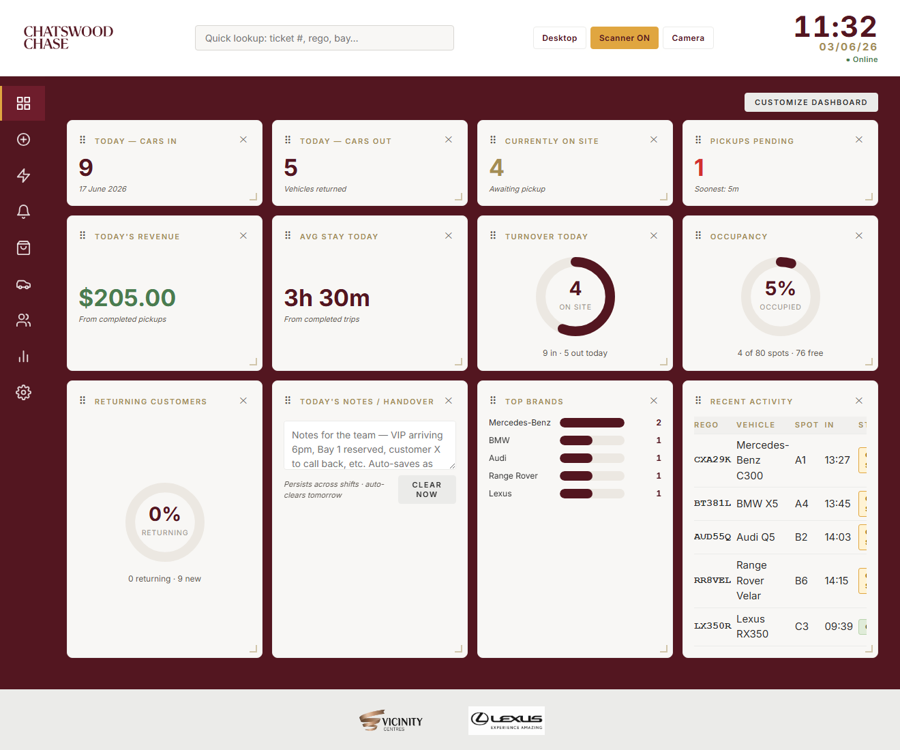
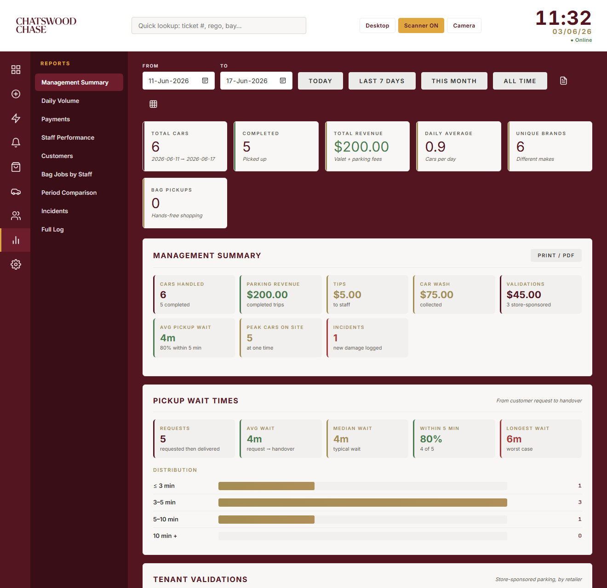
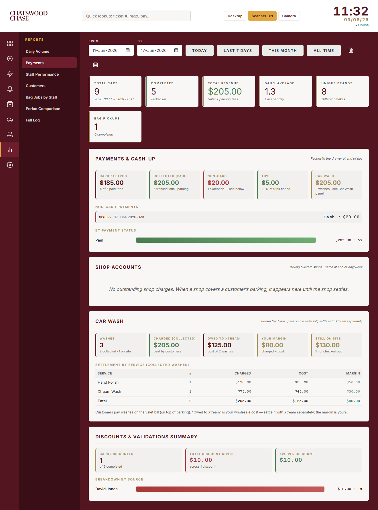

This is the Chatswood Chase valet dashboard — a single web app that runs in the browser on every device at the stand (counter PC, tablets and staff phones). It tracks every car from drop-off to pick-up, takes payment, prints key tags, texts customers their ticket, and gives the manager live reports.
Open the app and sign in with your staff name and password. Each staff member has their own login so the app can credit who parked and who returned each car (used in the Staff Performance report). Your manager sets up logins under Settings → Staff & Access.
A toggle in the top bar switches between two layouts (the choice is remembered per device):
| Tab | What it's for |
|---|---|
| Dashboard | Live snapshot of the day — cars in/out, on site now, revenue, handover notes, top brands, recent activity. |
| New Entry | Check a car in (the drop-off form). |
| Quick Pickup | Find a car fast to return it — scan the key tag or search. |
| Queue | Cars customers have requested, with a countdown so you know what to fetch next. |
| Bags | Hands-free shopping — bags collected from stores and put in the customer's car. |
| Active Cars | Every car currently on site, with how long it's been here, the running fee, and all the actions. |
| Customers | Searchable database of everyone who's used the valet, with their visit history. |
| Reports | Manager analytics — volume, payments, staff, customers, comparisons and the full log. |
| Settings | Manager setup — staff, car park, retailers, messaging, devices, data & backup. |
The Queue, Bags and Active Cars tabs show a small number badge when there's something waiting.
Go to New Entry. The ticket number and time-in are filled automatically. Fill the rest as you take the keys:

| Field | Notes |
|---|---|
| Customer Name required | Who the car belongs to. |
| Phone required | Australian mobile (e.g. 0412 345 678). Used to text them their ticket and pickup updates. |
| Car Brand required | Pick the make; Model and Colour are optional but help identify the car. |
| Parking Bay required | Where you parked it (e.g. A1). Critical for finding it again. |
| Number plate (Rego) required | Type it, or use the camera to read it automatically (see Plate scan below). |
| Attendant | Your initials — credits you as the staff member who parked it. |
| Charge parking to shop | VIP / store-validated parking — the shop pays, settle later. Optionally set how much the shop covers. |
| Car wash | Optional — add a wash now (see section 10). |
| Notes | Damage observations, special instructions, etc. |
| VIP | Tick to flag a VIP — they get a star throughout the app. |
Tap the car diagram to mark any existing scratches or dents before you park. These marks are shown again at checkout so you can verify the car is handed back in the same condition — your protection against false claims.
You can attach a photo of the car and capture its GPS location at drop-off for extra proof and easier finding.
Tap Save. Then automatically:
When a customer comes back, use Quick Pickup to find their car instantly:
The card shows the bay, how long the car's been here and the fee due. From here you can go straight to checkout. You can also use the global search box in the top bar from any screen.

When a customer asks for their car ahead of time (in person, by phone, or via their ticket page), put it in the Queue so the runner knows what to fetch and when.

The working list of every car currently on site. Each row shows ticket, customer, plate, brand, bay, time in, how long it's been here, and the running fee. The duration is colour-coded: green under 2 hours, amber 2–4, red 4+, flashing red 6+.

The small grouped icons cover the occasional actions; the two buttons on the right are the ones you use most:
| Action | What it does |
|---|---|
| 📞 Call | Phones the customer (shows only if a number is on file). |
| QR | Re-sends the customer their QR ticket link by text. |
| Re-prints the key tag. | |
| Edit | Fix the bay, time in or customer details. |
| Bag | Log a hands-free shopping bag pickup for this car (see section 9). |
| Droplet | Add or manage a car wash (see section 10). |
| Request | Put the car in the pickup queue with an ETA. |
| ✓ Mark Out | Check the car out and take payment. |
Below the on-site list is a Checked Out Today section so you can see what's already been returned.
Tap ✓ Mark Out on the car (from Active Cars or Quick Pickup). The checkout window shows the duration and the fee, broken down into parking + the $20 valet fee. Before confirming:
Add a store validation or discount (a percentage or a dollar amount) — e.g. a David Jones validation. Each one is recorded so the manager can see who validates and how much is given away (Reports → Payments → Discounts).
| Status | Meaning |
|---|---|
| Paid | Customer paid now. Choose the method: Card (the norm here), Cash, EFTPOS or Other. |
| Unpaid | Left without paying / to chase. Shows as outstanding in reports. |
| Complimentary | No charge for the parking (a car wash, if any, is still charged). |
| Charged to account / shop | Billed to a shop's account to settle later. |
You can also add a tip, or override the fee. The Attendant (returning car) field credits who fetched it.
Every checkout has a Return condition step. Leave it on ✓ No new damage for a clean handover, or tap ⚠ New damage / incident to describe damage found on return and tick that the customer acknowledged it. Logged incidents appear in Reports → Incidents — your record if a claim comes up later.
If a Square Terminal is set up, tap Charge on Square Terminal to send the exact amount to the card machine. When the payment succeeds the car is checked out automatically.
Confirm to finish. The car leaves the on-site list, the revenue is recorded, and the bill includes any car wash on top of the parking.
Hands-free shopping lets a customer leave their purchases with stores and have valet collect everything and load it into their car. Track each job on the Bags tab:

The Bags tab badge shows how many jobs are still open.
Valet customers can add a car wash from Xtream Car Care in the centre. The valet looks after the whole thing and the customer pays for it on the same valet bill.

Prices are in the pricing reference. To change or remove a wash, tap the chip or droplet to reopen the dialog.

The manager's at-a-glance view of today:
Every car logged builds a customer database, keyed by number plate. Search by name, plate or phone to see someone's full visit history and total spend. Returning customers and VIPs are easy to spot — useful for recognising regulars. Editing a customer's details updates them across all their past visits.
Pick a date range at the top; every panel updates to that range. The Reports menu groups related panels together:


| Menu item | What's inside |
|---|---|
| Management Summary | Centre-facing roll-up — cars handled, revenue, tips, car wash, validation value, average pickup wait, peak occupancy and incidents — plus Pickup Wait Times (request→handover SLA) and Tenant Validations (by retailer). Has a Print / PDF one-pager for monthly reporting. |
| Daily Volume | Cars per day (with revenue), busiest/slowest day and trend vs the previous period, average by day of week, peak times by hour, peak cars on site, customer spend and brand breakdown. |
| Payments | Cash-up: paid revenue split Card/EFTPOS vs cash, tips, outstanding, with non-card payments flagged. Plus Shop Accounts, Car Wash and Discounts panels stacked beneath. |
| Staff Performance | Cars parked per attendant, and checkouts + revenue + tips per attendant. |
| Customers | Stay-length tiers (how many park free under 2 hr vs paid) and repeat customers by visit count and spend. |
| Bag Jobs by Staff | Hands-free shopping jobs per staff member, split into Collected (picked the bags up at the shop) and Delivered (put them in the car), plus Avg time per job per person. A breakdown at the top shows the average Wait to claim (requested → claimed), To shop (claimed → bags photographed at the shop), Shop → car (shop → loaded in car) and Total per job, over the selected range. |
| Period Comparison | This week/month/year vs the last. |
| Incidents | Cars where new damage was logged at handover, with notes and whether the customer acknowledged it. |
| Full Log | Every entry, searchable — the complete record. |
You can export a report to CSV (for a spreadsheet) or to a print-ready PDF for end-of-day or end-of-week records.
| Section | What you set |
|---|---|
| Staff & Access | Add/remove staff logins and passwords, and security settings. Each login lets the app credit work to the right person. |
| Car Park | Capacity (open spots) for the occupancy gauge, and the overstay alert threshold (hours) that flags long-staying cars on Active Cars. |
| Retailers | The list of stores used for validations and charge-to-shop accounts. Edit this to match the centre's tenants. |
| Car Wash | Your wholesale cost (what you owe Xtream) per package and size. Lets the Car Wash report show your margin. The customer always pays the retail menu price. |
| Alerts & Messaging | Customer SMS (the QR ticket text is sent via ClickSend) and the end-of-day close reminder. |
| Devices | Key-tag printer (BIXOLON via the WebPrint bridge), Square Terminal device ID, the camera scanner, and keep-screen-awake. |
| Data & Backup | Export/import the data and check cloud-sync status. |
Key tags print to a BIXOLON SPP-R200III through the WebPrint bridge app on the device. A tag prints automatically on check-in; you can reprint from the car's row. Set the printer name and connection in Settings → Devices.
The camera reads the QR code on a key tag or the customer's ticket to find a car instantly. The scanner library loads the first time you open it. Allow camera access when the browser asks.
On the check-in form you can photograph the plate to read it automatically instead of typing. It tries a fast cloud read first and falls back to on-device reading offline.
When you save a check-in with a mobile number, the customer gets a text with a link to their live QR ticket (showing status and pickup updates). Sent through ClickSend.
Card payments can be sent straight to a paired Square Terminal from the checkout screen; a successful charge checks the car out automatically. Configure the terminal's Device ID in Settings → Devices.
A flat $20 valet fee applies, plus parking time after the first 2 hours free:
| Duration | Parking fee |
|---|---|
| 0 – 2 hrs | FREE |
| 2 – 2.5 hrs | $3 |
| 2.5 – 3 hrs | $5 |
| 3 – 3.5 hrs | $7 |
| 3.5 – 4 hrs | $10 |
| 4 – 4.5 hrs | $20 |
| 4.5 – 5 hrs | $25 |
| 5 – 5.5 hrs | $30 |
| 5.5 – 6 hrs | $35 |
| 6 – 6.5 hrs | $40 |
| 6.5 – 7 hrs | $45 |
| 7+ hrs (daily max) | $80 |
The total fee is always valet fee + parking. The app calculates it automatically at checkout.
| Service | Small (sedan/hatch) | Large (SUV/4WD) |
|---|---|---|
| Xtream Wash (steam wash) | $75 | $95 |
| Hand Polish (+wax & polish) | $100 | $130 |
| Interior Detailing | $195 | $245 |
| Semi Detailing | $250 | $320 |
| Full Detailing | $295 | $420 |
Paint correction, paint protection and other specialty services are quote-only — ask Xtream.
| Problem | What to do |
|---|---|
| A car logged on one device isn't on another | Check the internet. The other device syncs within seconds of reconnecting — nothing is lost; offline changes queue and send automatically. |
| "Connecting to cloud database…" stuck | Refresh the page. If it persists, check the internet connection on that device. |
| Camera scanner won't open | Allow camera access when the browser prompts. The app must be on https for the camera to work. |
| Key tag won't print | Check the WebPrint bridge app is running and the printer name matches Settings → Devices. The bridge and the app must use compatible secure connections. |
| Customer didn't get their text | Re-send from the car's row (QR action). Confirm the mobile number is a valid Australian mobile. |
| Screen keeps sleeping | Turn on keep-screen-awake in Settings → Devices. |
| Wrong bay / time entered | Use the Edit action on the car's row in Active Cars. |
| Active / on site | A car that's been checked in but not yet checked out. |
| Attendant | The staff member who parked (in) or returned (out) a car. |
| Charge to shop / shop account | Parking billed to a store to settle later, instead of the customer paying. |
| Comp | Complimentary — parking given for free. |
| ETA | How many minutes until a customer wants their car (pickup queue). |
| Key tag | The printed ticket attached to the keys, carrying the QR code. |
| Validation | A store-sponsored discount on the parking fee. |
| VIP | A flagged customer who gets a star and priority handling. |